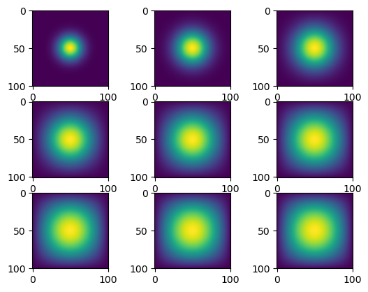

import numpy as np
from matplotlib import pyplot as plt
import time
import inspect
from jax.experimental import sparse
import jax.numpy as jnp
import jaxIn this blog, I will explain a set by step simulation of two-dimensional heat diffusion using four methods. We will look to see which method is the quickest and most efficient
Step 1: Import all Packages
For this simulation, we will use numpy, jax, and sparse as differnet methods. We will also use matplotlib to plot our simulations, and time to time how long each method of simulation takes to run.
N = 101 # size of grid (n x n)
epsilon = 0.2 # size of each step
iterations = 2700 # number of iteratons
We will set our initial conditions as well. We will use a grid size of 101 x 101 and an epsilon constant of 0.2. For each simulation, we will use 2700 iterations, marking each 300th iteration, for. a total of 9 marks for each simulation.
# construct initial condition: 1 unit of heat at midpoint.
u0 = np.zeros((N, N))
u0[int(N/2), int(N/2)] = 1.0
plt.imshow(u0)
Finall, we will set our initial condition of 1 unit of heat at midpoint. Notice the yellow dot in the middle
Step 2: Simulating using matrix multiplication
We will start by using matrix-vector multiplication to simulate the heat diffusion in the 2D space. The vector here is created by flattening the current solution . Each iteration of the update is given by the function advance_time_matvecmul.
from heat_equation import advance_time_matvecmul
print(inspect.getsource(advance_time_matvecmul))def advance_time_matvecmul(A, u, epsilon):
"""
advances by one timestep using matrix-vector multiplication
Args:
u: N x N grid
epsilon: constant
Returns:
N x N grid that was advanced
"""
N = u.shape[0] # gets size N from u, since u is N x N
u = u + epsilon * (A @ u.flatten()).reshape((N, N))
return u
We then define a function get_A that takes the value N as the argument and returns the corresponding matrix A.
from heat_equation import get_A
print(inspect.getsource(get_A))def get_A(N): # takes argument N and returns the corresponding matrix A
'''
Creates and returns matrix A for advance_time_matvecmul
Parameters:
N : side of the matrix (N x N)
Returns:
Matrix A : N x N used for advance_time_matvecmul
'''
n = N * N #
diagonals = [-4 * np.ones(n), np.ones(n-1), np.ones(n-1), np.ones(n-N), np.ones(n-N)]
diagonals[1][(N-1)::N] = 0
diagonals[2][(N-1)::N] = 0
A= np.diag(diagonals[0]) + np.diag(diagonals[1], 1) + np.diag(diagonals[2], -1) + np.diag(diagonals[3], N) + np.diag(diagonals[4], -N)
return A
Using get_A and advance_time_matvecmul, we will run the simulation for 2700 iterations and save every 300th iteration to be plotted. We will measure the time it takes to run this to see how long matrix multiplcation takes.
The code to run the simulation is below, note the time it takes to run.
We start by reseting out initial condition that we previewed above. We then start the timer, and create a 9 item list to hold our 9 subplots. We use get_A and advance_time_matvecmul to run the simulation, and end with plotting our 9 subplots.
# construct initial condition: 1 unit of heat at midpoint.
u0 = np.zeros((N, N))
u0[int(N/2), int(N/2)] = 1.0
start = time.time() # gets the beginning time
images = [None, None, None,
None, None, None,
None, None, None] # using a 3x3 grid for images
A = get_A(N) # creates the A matrix
for i in range(1,iterations+1): # we add +1 here since range doesn't include last number
u0 = advance_time_matvecmul(A, u0, epsilon) # advances one timestep
if i % 300 == 0: # sees if its the 300th iterations
images[(i//300) - 1] = u0 # adds the iteration to the list of images
print((time.time() - start), "seconds") # print time it take to exectue
x, img = plt.subplots(3,3) # plots the images
for i in range(9):
if i < 3:
img[0][i].imshow(images[i]) # plots
elif i < 6:
img[1][i-3].imshow(images[i])
elif i < 9:
img[2][i-6].imshow(images[i])
39.29159188270569 seconds
We note it took about 40 seconds to run this simulation. That’s long. We can look at other simulation methods to see if a more efficient method exists.
Step 3: Simulating using Sparse matrix in JAX
We will now attempt to speed up our simulation using the sparse matrix in Jax. We will need to modify our get_A function slightly to work with jax. Our new function uses jnp.array and sparse.BC00 commands to return a N x N matrix to be used for advance_time_matvecmul_jax
from heat_equation import get_sparse_A
print(inspect.getsource(get_sparse_A))def get_sparse_A(N):
"""
returns final - the sparsed matrix A
Parameters:
N: Size of the returned matrix A (N x N)
Returns:
final: N x N matrix for advance_time_matvecmul
"""
A = get_A(N) # gets A from above function
new = jnp.array(A)
final = sparse.BCOO.fromdense(new)
return final
We will also need to modify our advance time function to be used with jax. This is a simple modification.
from heat_equation import advance_time_matvecmul_jax
print(inspect.getsource(advance_time_matvecmul_jax))@jax.jit
def advance_time_matvecmul_jax(A, u, epsilon):
"""
advances by one timestep using sparse matrix
Args:
A: Sparse matrix A
u: N x N grid
epsilon: constant
Returns:
N x N grid that was advanced
"""
N = u.shape[0] # gets size N from u, since u is N x N
u = u + epsilon * (A @ u.flatten()).reshape((N, N))
return u
Now, using the two functions, we can run our simulation just as we had before.
# construct initial condition: 1 unit of heat at midpoint.
u0 = np.zeros((N, N))
u0[int(N/2), int(N/2)] = 1.0
start = time.time() # gets the beginning time
images = [None, None, None,
None, None, None,
None, None, None] # using a 3x3 grid for images
A = get_sparse_A(N)
for i in range(1,iterations+1):
u0 = advance_time_matvecmul_jax(A, u0, epsilon)
if i % 300 == 0:
images[(i//300) - 1] = u0
print((time.time() - start), "seconds") # print time it take to exectue
x, img = plt.subplots(3,3) # plots the images
for i in range(9):
if i < 3:
img[0][i].imshow(images[i]) # plots
elif i < 6:
img[1][i-3].imshow(images[i])
elif i < 9:
img[2][i-6].imshow(images[i])3.858076810836792 seconds
Now, our simulation only took 3.8 seconds to run. This is 10 times faster than the original 40 seconds it took using matrix multiplcation. But we can continue testing methods to see if there’s an even faster one out there.
Step 4: Simulating using direct operation with numpy
We will first pad the matrix with zeroes on all sides to create a conditional boundary. We will then flatten the matrix in a similar way as before, and then use np.roll to roll the elements of the array along a the axis. We will the finally reshape the matrix back to N x N to be used in the simulation.
We will use a new advance time that advances the solution by one timestep in the file.
from heat_equation import advance_time_numpy
print(inspect.getsource(advance_time_numpy))def advance_time_numpy(u, epsilon):
"""
advances by one timestep using numpy techniques
Parameters:
u: N x N grid
epsilon: constant
Returns:
reshaped : N x N grid that was advanced
"""
N = u.shape[0] # gets N which is from the N x N u
# extends the grid with a border of zeros (padding)
u = np.pad(u,((1,1), (1,1)), constant_values=0).flatten()
# simulates using numpy and roll
# roll is "rolls the elements of an array along a specified axis"
final = u + epsilon*(np.roll(u,N+2) + np.roll(u,-(N+2)) + np.roll(u,-1) + np.roll(u,1) - 4*u)
# reshapes back to N x N
reshaped = np.reshape(final,(N+2,N+2))[1:N+1,1:N+1]
return reshaped
Note we do not have a get_A for this one. Now we will run our simulation as before.
# construct initial condition: 1 unit of heat at midpoint.
u0 = np.zeros((N, N))
u0[int(N/2), int(N/2)] = 1.0
start = time.time() # gets the beginning time
images = [None, None, None,
None, None, None,
None, None, None] # using a 3x3 grid for images
for i in range(1,iterations+1):
u0 = advance_time_numpy(u0, epsilon)
if i % 300 == 0:
images[(i//300) - 1] = u0
print((time.time() - start), "seconds") # print time it take to exectue
x, img = plt.subplots(3,3) # plots the images
for i in range(9):
if i < 3:
img[0][i].imshow(images[i]) # plots
elif i < 6:
img[1][i-3].imshow(images[i])
elif i < 9:
img[2][i-6].imshow(images[i])0.21892309188842773 seconds
Now, this took less than 1 second! This is another huge improvement from the previous method
Step 5: Simulating using jax
Now, let’s use jax to do the similar using just-in-time compilation without using (sparse) matrix multiplication routines.
from heat_equation import advance_time_jax
print(inspect.getsource(advance_time_jax))@jax.jit
def advance_time_jax(u, epsilon):
"""
advances by one timestep using numpy techniques
Parameters:
u: N x N grid
epsilon: constant
Returns:
reshaped : N x N grid that was advanced
"""
N = u.shape[0] # gets size N
# extends the grid with a border of zeros (padding)
u = jnp.pad(u,((1,1), (1,1)), constant_values=0).flatten()
# simulates using numpy and roll
# roll is "rolls the elements of an array along a specified axis"
final = u + epsilon*(jnp.roll(u,N+2)+ jnp.roll(u,-(N+2))+ jnp.roll(u,-1) + jnp.roll(u,1) - 4*u)
# reshapes back to N x N
reshaped = jnp.reshape(final,(N+2,N+2))[1:N+1,1:N+1]
return reshaped
Using our new advance_time_jax function, we will run the simulations as before.
# construct initial condition: 1 unit of heat at midpoint.
u0 = np.zeros((N, N))
u0[int(N/2), int(N/2)] = 1.0
start = time.time() # gets the beginning time
images = [None, None, None,
None, None, None,
None, None, None] # using a 3x3 grid for images
for i in range(1,iterations+1):
u0 = advance_time_jax(u0, epsilon)
if i % 300 == 0:
images[(i//300) - 1] = u0
print((time.time() - start), "seconds")
x, img = plt.subplots(3,3) # plots the images
for i in range(9):
if i < 3:
img[0][i].imshow(images[i]) # plots
elif i < 6:
img[1][i-3].imshow(images[i])
elif i < 9:
img[2][i-6].imshow(images[i])0.08771395683288574 secondsThis time it took 0.08 seconds, more than twice as fast as the prior method!
Step 6: Summary
We can see that each method showed major speed increases. The final method, jax, took less than 0.1 seconds - a huge improvment to our original 40 second matrix multiplcation method.
Step 7: Comparisons
Matrix multiplication was the first method we used. It was the simplest to implement since the majority of the code was provided to us in the instructions. The method was the slowest to run, taking about 40 seconds. When I was testing I noticed this code took sometiems taking even longer. The second method was with sparse matrixes. This method was much faster, taking slightly less than 4 seconds. This was 10x faster than the prior method! This implementation was fairly simple to code as well. The third method was with direct operation and used some differential equations. This was also significantly faster, taking less that 1 second to run. The final and fastess method was simulated using jax. This was super fast, taking only 0.08 seconds to run. The fourth method demonstrated how efficent jax is, and after the homework, I woudld recommend anyone to default to the jax methods when running similar projects.